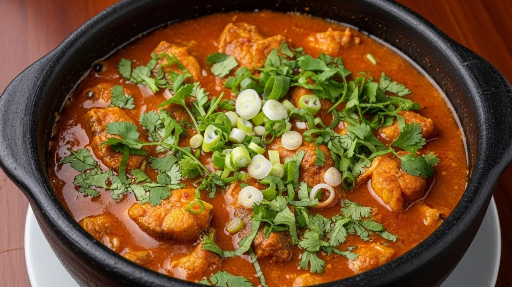
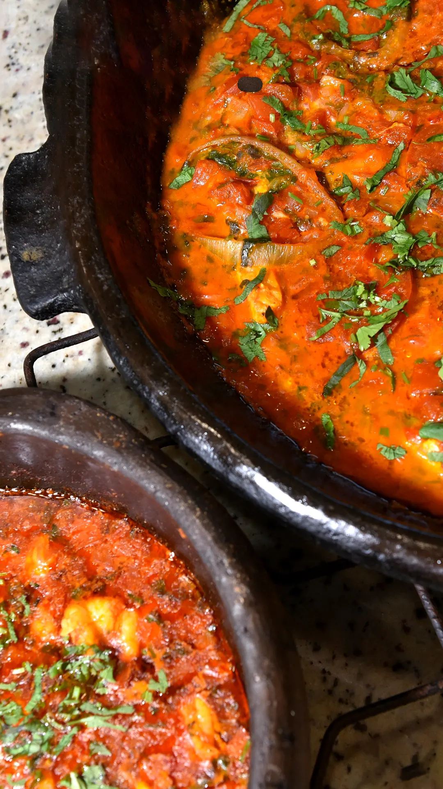

A culinária brasileira é resultado de uma rica mistura de culturas ao longo da história. Desde os povos indígenas, que já utilizavam ingredientes naturais como peixes, mandioca e ervas, até a chegada dos portugueses e africanos, que trouxeram novos temperos, técnicas e sabores, o Brasil desenvolveu uma gastronomia única e diversificada. Cada região do país incorporou essas influências de maneira própria, criando pratos típicos que carregam tradição, identidade e história em cada detalhe.
Dentro desse contexto de diversidade cultural e gastronômica, surge a moqueca, um dos maiores símbolos da culinária nacional. Muito mais do que um simples prato típico, ela representa a história, a cultura e a identidade de diferentes regiões do Brasil. Com raízes indígenas e influências africanas e portuguesas, a moqueca se destaca pelo seu sabor marcante, aroma envolvente e preparo artesanal, que valoriza ingredientes frescos como peixe, frutos do mar, temperos naturais e, em algumas versões, o famoso azeite de dendê.
Neste site, você vai conhecer tudo sobre esse ícone da culinária brasileira: desde sua origem até as diferenças entre a moqueca capixaba e a moqueca baiana, além de curiosidades, receitas e dicas para preparar uma moqueca deliciosa em casa. Prepare-se para explorar sabores únicos e mergulhar em uma verdadeira experiência gastronômica!
Origem da Moqueca
A moqueca tem suas origens ligadas aos povos indígenas que habitavam o território brasileiro antes da chegada dos europeus. Esses povos já preparavam peixes e frutos do mar utilizando técnicas simples, como o cozimento em recipientes de barro e o uso de folhas e ervas naturais para temperar os alimentos. A própria palavra “moqueca” vem do termo indígena “moquém”, que se referia a uma forma de assar ou cozinhar alimentos lentamente.
Com a chegada dos portugueses e a influência africana durante o período colonial, a receita original foi sendo modificada e enriquecida. Os africanos trouxeram ingredientes marcantes como o azeite de dendê e o leite de coco, enquanto os portugueses contribuíram com novos temperos e métodos culinários. Essa mistura de culturas transformou a moqueca em um prato mais complexo, cheio de sabores e aromas característicos.
Ao longo do tempo, diferentes regiões do Brasil desenvolveram suas próprias versões do prato, destacando-se principalmente a moqueca capixaba e a moqueca baiana. Enquanto a versão capixaba mantém uma preparação mais leve, sem dendê e com destaque para o sabor natural dos ingredientes, a baiana é mais intensa e colorida, com forte presença de temperos africanos. Essas variações mostram como a moqueca evoluiu ao longo da história, mantendo sua essência, mas se adaptando às culturas locais.

| Item | Quantidade/Peso | Modo de Preparo |
|---|---|---|
| Peixe (badejo, robalo, papaterra, dourado, namorado ou cação) | 1,5 kg | Cortado em postas e temperado com limão e sal |
| Cebolinha verde | 1/2 xícara (chá) | Picada |
| Alho | 3 dentes | Amassado ou picado |
| Pimenta malagueta | A gosto | Picada (opcional) |
| Urucum (colorau ou azeite de urucum) | 2 colheres de sopa | Usado para dar cor e sabor |
| Coentro | 1/2 xícara (chá) | Picado |
| Cebola média | 2 unidades | Cortada em rodelas |
| Tomate | 3 a 4 unidades | Cortado em rodelas |
| Azeite de oliva | 2 a 3 colheres de sopa | Usado no refogado |
| Óleo de soja | 1 fio (opcional) | Para auxiliar no refogado |
| Sal | A gosto | Usado para temperar |
| Limão | 1 a 2 unidades | Espremido para temperar o peixe |
| Água | 1/2 xícara (aproximadamente) | Adicionada durante o cozimento |
